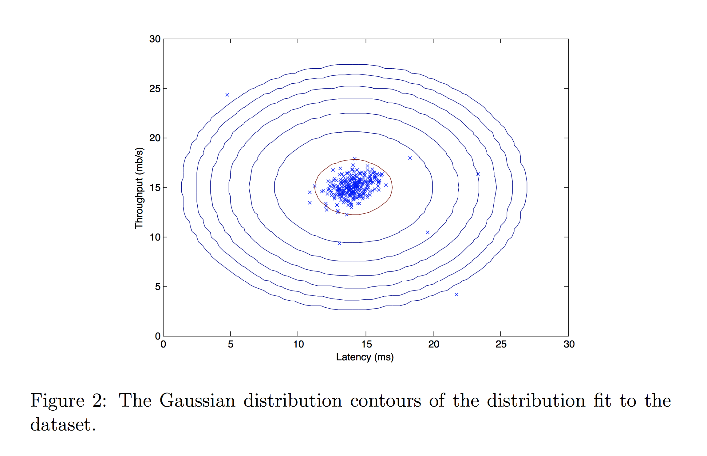
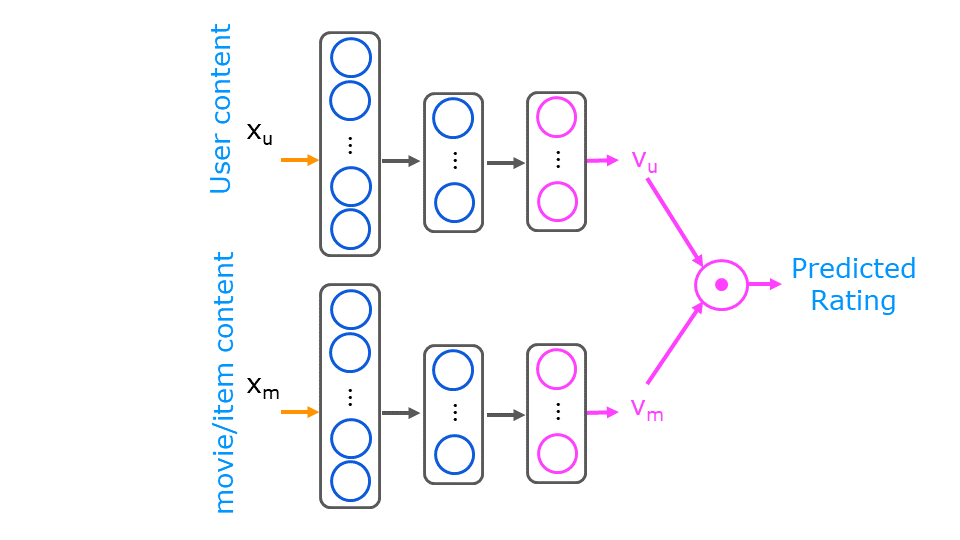
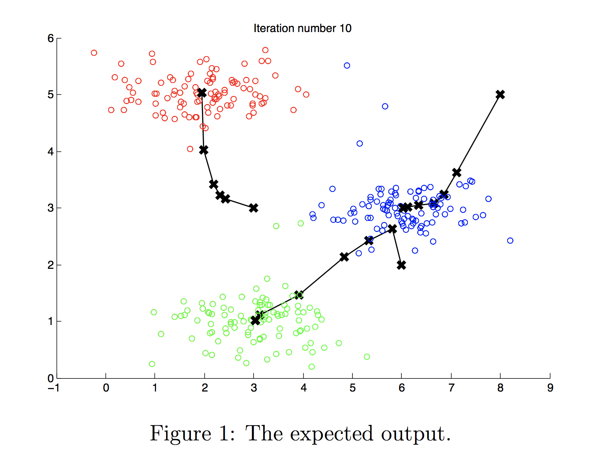
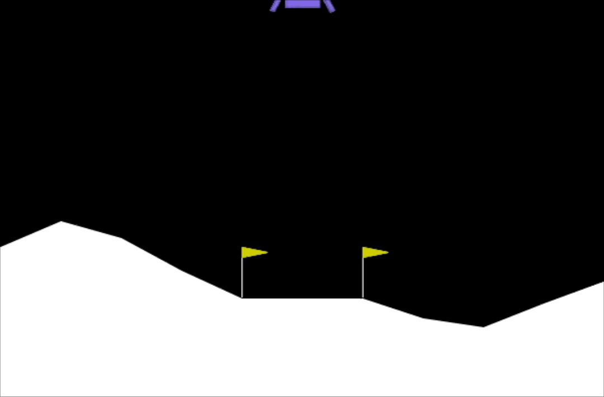
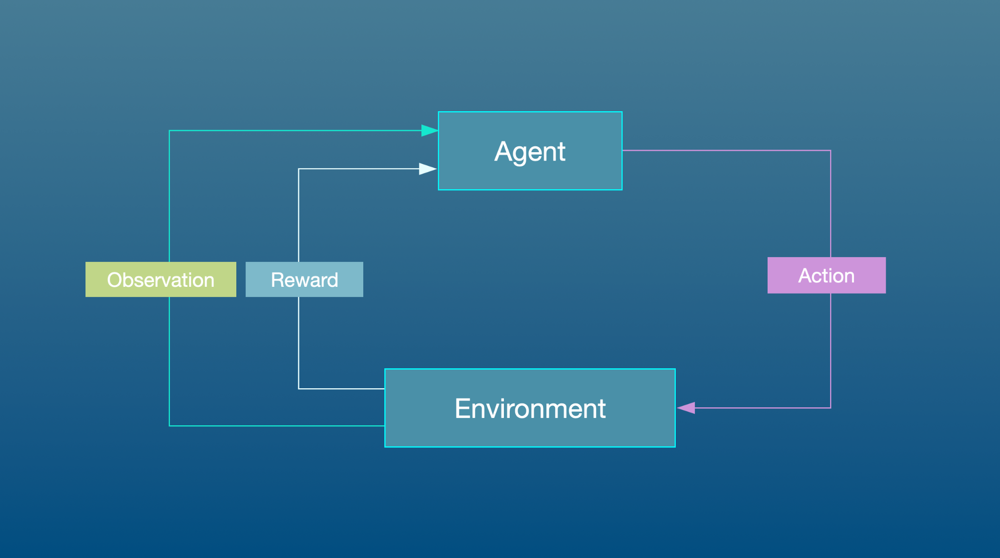

What I learned
I learned K-Means, Gaussian anomaly detection, PCA, collaborative filtering, neural content-based recommenders, state-action value functions, and deep Q-learning. The projects turned abstract ideas into visual and measurable systems.
This was the most milestone-rich part of the Machine Learning Specialization for my page because it opened three important directions: discovering structure without labels, building recommender systems, and learning from reward feedback.

I learned K-Means, Gaussian anomaly detection, PCA, collaborative filtering, neural content-based recommenders, state-action value functions, and deep Q-learning. The projects turned abstract ideas into visual and measurable systems.
This course expanded my ML thinking beyond classification accuracy: recommendation, hidden structure, dimensionality reduction, and sequential decision making became part of my toolkit.
Unsupervised Learning, Recommenders, Reinforcement Learning was not just a certificate item. I used it as one layer in a longer path: understand the concept, implement it in code, test it on assignments or notebooks, then connect the idea to future portfolio systems.
This was the most milestone-rich part of the Machine Learning Specialization for my page because it opened three important directions: discovering structure without labels, building recommender systems, and learning from reward feedback. The reason it matters on this page is that it shows the exact stage where my learning moved forward, instead of presenting education as a flat list of names.
The most important layer was not memorizing definitions; it was learning how the course concepts behave when they are turned into working code, trained models, evaluation outputs, and notebooks.
I treated the course as a practical loop: watch the theory, re-implement the assignment logic, inspect outputs, record results, and then keep the code in a public repository as evidence of the learning process.
This course expanded my ML thinking beyond classification accuracy: recommendation, hidden structure, dimensionality reduction, and sequential decision making became part of my toolkit. This page also connects to standalone milestone pages, so the course is not represented only by certificate text; it is represented through the labs, models, notebooks, results, and media produced during the learning path.
I learned K-Means, Gaussian anomaly detection, PCA, collaborative filtering, neural content-based recommenders, state-action value functions, and deep Q-learning. The projects turned abstract ideas into visual and measurable systems. I also used the course to improve how I explain technical decisions: why a model is chosen, what assumptions it makes, where it fails, and what the next improvement should be. That explanation layer is important because my goal is end-to-end AI engineering, not only passing assignments.

A Gaussian anomaly detection system for server monitoring, using throughput and latency to identify abnormal machines by probability thresholding.
Open milestone
A movie recommender that learns latent movie and user vectors from a rating matrix, then predicts personalized preferences.
Open milestone
A two-tower neural recommender that combines user features and movie features into learned embeddings, then predicts ratings and similar items.
Open milestone
A clustering milestone that implements K-Means from scratch, then uses it to compress an RGB image by replacing thousands of colors with centroid colors.
Open milestone
A dimensionality-reduction milestone using PCA to reveal hidden structure that is not visible from raw pairwise feature plots.
Open milestone
A Deep Q-Learning agent trained to land a LunarLander safely using rewards, a Q-network, a target network, and experience replay.
Open milestone
A compact Mars-rover-style value-function example for understanding how rewards, discount factor, and missteps change action preference.
Open milestone